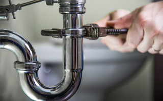

Alan Laird Plumbing - Reliable & Professional Kings County Plumbers
Alan Laird Plumbing are local Kings County plumbers with the skills and tools to ensure your residential plumbing project in Kings County, CA is completed to perfection. You don't have to settle for less when it comes to finding the right Kings County plumbing contractor for your project. Just call on Alan Laird Plumbing to serve as your local Kings County plumbing contractor, and give us the opportunity to show you what true customer service looks like!
We are well known for our phenomenal customer care and quality plumbing work. Just take a look at some of our recent client testimonials, and you'll see how far our reputation as a reliable Kings County plumbing contractor goes! We also encourage you to look read some of our stellar reviews showcasing some of the Kings County plumbing projects we have completed for our residential clients.
Don't settle for less. Get the best! Call Alan Laird Plumbing today for Kings County plumbing services!
Alan Laird Plumbing - Kings County Residential Plumbing
Do you need a local plumber? Call the company you can rely on for quality Kings County plumbing repairs that are done correctly! Call Alan Laird Plumbing today. We offer reliable plumbing repair services using quality products while ensuring our customers get amazing customer service and satisfaction with the work of our Kings County plumbing repairs team.
The Kings County plumbing repairs and drain cleaning services we do are top notch! Put your trust in our expertise as a professional Kings County plumbing repair company. Call us today to schedule your needed repairs, and don't wait for them to get worse. We can also provide you with maintenance programs that will keep you on top of any necessary repairs, saving you money in the long run and ensuring you get a full life out of your Kings County plumbing.
Kings County Plumbers
Alan Laird Plumbing is the Kings County plumber dedicated to your plumbing needs. From plumbing inspections to drain cleaning, plumbing repairs, and new plumbing installation, we care about your plumbing project. When you choose us to serve as your Kings County plumber, you can expect:
Reliability – Our Kings County plumbers offer year around plumbing and repair services.
Flexibility – We are fully compliant with your billing procedures and needed plumbing services.
Specialized – We provide custom plumbing repair and replacement services in Kings County.
Local - and proud of it! Our Kings County plumbers live in Kings County and take pride in the work they do.
As a professional Kings County plumber, our plumbing services include new plumbing installation, drain cleaning, plumbing inspections, plumbing maintenance, plumbing repairs, and more. Call us today for a no-obligation consultation or to request an estimate for the cost of your Kings County plumbing project.
- Kings County plumbing contractor
- Kings County residential plumbing
- Kings County plumbing contractor
- Kings County drain cleaning
- Kings County plumber
- Kings County plumbing repairs
- Kings County leak repairs
- Kings County plumbing
Did you search for "plumbers near me"?
Looking for drain cleaning? Is your plumbing still in good condition? Well, if your plumbing is starting to leak or it is getting older, you may need to contact an expert Kings County plumbing contractor to evaluate the condition of your plumbing. Don’t wait for even more plumbing damages to occur, as this could result in the need for Kings County drain cleaning services.
How will you know if you need to hire a plumber? Sometimes it is as simple as considering the age of your Kings County plumbing. If your plumbing has aged considerably and hasn't received regular plumbing maintenance, then it is highly probable that you will need to invest in Kings County drain cleaning services. If your plumbing is older and potentially full of residue unlike when it was first installed, then most likely drain cleaning services are in your future if you want to keep your plumbing in good condition.
Before hiring a professional Kings County drain cleaning contractor, make sure to keep in mind these helpful tips. It is not a good idea to just hire somebody right away. First, hire not just a plumber but a professional plumber – a licensed Kings County plumbing contractor. From this, you can be sure that a professional will be handling your Kings County drain cleaning.
The Services We Provide in Kings County, CA
Kings County Bathroom Plumbing
Kings County Water Heater Installation